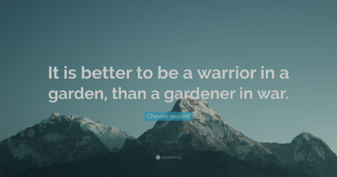

Désamorcer la Violence : L'Art du Compromis
La violence, qu'elle soit physique, verbale ou autoritaire, est une réponse primitive à nos conflits. Elle promet une résolution rapide, mais cache un coût élevé pour l'harmonie à long terme. Cet article mettra en lumière la futilité de la violence et l'importance d'une compréhension profonde de la culture et du contexte social pour forger des solutions qui rassemblent.
Imposer son opinion par la force
1. Le débat actuel
Les débats modernes se transforment trop souvent en arènes où s'imposer est synonyme de victoire. Or, cette victoire est éphémère. En réalité, elle détourne de l'objectif véritable du débat : parvenir à une compréhension mutuelle. Il est temps de redéfinir la réussite, en valorisant non pas la conquête mais la connexion.
2. Comprendre la violence
La violence, qu'elle éclate dans un coup de poing ou dans un cri, stoppe le dialogue. Elle peut sembler résoudre un conflit, mais ce silence est trompeur. La douleur et la rancœur restent, prêtes à surgir à nouveau. Ainsi, la violence est une fausse solution, une impasse qui entrave la véritable résolution des conflits.
3. Les limites de l'imposition
Et ces cicatrices laissées par la violence attestent de ses limites. Imposer sa volonté peut bien sûr faire taire l'opposition, mais le silence n'est pas synonyme de paix. Il est plutôt le calme avant la tempête de la rébellion et du ressentiment. L'histoire nous montre que la force engendre la résistance, et non la résolution.
Apprendre à connaître son interlocuteur
1. Culture et société
Ce cycle de violence et de résistance ne peut être brisé que par la compréhension. Notre tissu social, complexe et diversifié, exige que nous reconnaissions l'impact de la culture et du contexte sur nos interactions. Comprendre d'où vient l'autre, c'est le premier pas vers une résolution pacifique.
2. Le rôle de l'écoute active
Et cette compréhension ne peut émerger sans une écoute active. C'est la clé qui ouvre la porte à la réconciliation. En écoutant vraiment, en reflétant ce que nous avons entendu, nous montrons que chaque voix compte. Cet échange crée un espace pour des solutions où personne n'est marginalisé.
Chercher à faire société
1. Le pouvoir du compromis
Ce respect mutuel est le fondement du compromis. Dans le compromis, contrairement à la violence, il n'y a pas de vainqueur ni de vaincu, mais des partenaires qui co-construisent l'avenir. Des accords négociés avec soin ont uni des nations, résolu des grèves, sauvé des relations. Le compromis est la véritable victoire commune.
2. La recherche d'une solution commune
Pour atteindre ce compromis, le chemin est clair : il faut dialoguer, échanger, s'entendre. La discussion n'est pas une bataille mais un pont. À travers l'écoute et l'empathie, nous tissons des accords solides qui soutiennent le poids de nos sociétés diverses et dynamiques.
Les enseignements de Peterson et Carnegie
Les penseurs comme Jordan Peterson et Dale Carnegie nous enseignent que derrière chaque opinion, il y a une personne. En valorisant l'individu, nous honorons tout un chacun. Leur sagesse résonne avec notre sujet : c'est en reconnaissant l'autre que nous construisons la paix.
"Le dialogue authentique n'est pas la compétition, mais un échange de vues dans lequel les deux parties ont l'occasion de changer et de se développer."
De Jordan Peterson.
"Vous pouvez gagner plus d'amis en deux mois en devenant vraiment intéressé par les autres personnes que vous ne pourriez en deux ans en essayant de faire en sorte que les autres s'intéressent à vous."
De Dale Carnegie
Statistiques et recherches
Les études confirment la puissance de l'écoute et du compromis. Les données montrent que les solutions partagées ont plus de succès et de durabilité que celles imposées. Ces faits ne sont pas seulement des chiffres, mais le reflet de vies améliorées par la collaboration et la compréhension mutuelle.
Vers une pratique de l'écoute active
Vous aussi, pratiquez l'écoute active. Dès aujourd'hui, testez cette compétence : dans votre prochaine discussion, reformulez les propos de votre interlocuteur pour vous assurer que vous avez compris. C'est un petit pas vers de grands changements.
Conclusion
La violence ne résout rien, le dialogue ouvre des voies. Chaque conversation est une opportunité de construire ou de détruire. Choisissez de construire, avec empathie et respect. La paix commence par l'écoute, et le compromis en est le fruit.